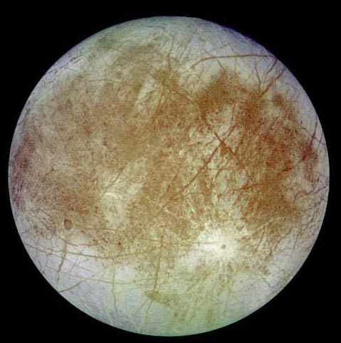
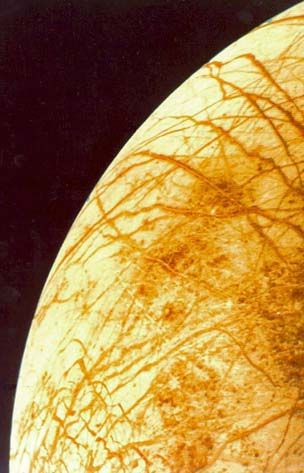

Europa

NASA image from Galileo orbiter.
Europa, one of the moons of Jupiter, is about 3,160 kilometers (1,950 miles) in diameter, or about the
size of Earth's moon. This image was taken on September 7, 1996, at a range
of 677,000 kilometers (417,900 miles) by the solid state imaging television
camera onboard the Galileo spacecraft during its second orbit around
Jupiter. The bright feature containing
a central dark spot in the lower third of the image is a young impact crater
some 50 kilometers (31 miles) in diameter. This crater has been
provisionally named 'Pwyll' for the Celtic god of the underworld.
|
A NASA image from Voyager missions
| Europa orbits at 9.4 Jupiter radii, compared to 5.9 for Io. Europa is very different, showing a vast network of lines on fields of water ice. Some of the lines (ridges, fractures?) extend halfway around the moon. There are similar ridges on ice floes in Earth's polar ridges, called "pressure ridges". There are very few impact features on Europa, suggesting a young surface. Modeling of Europa suggests a vast water ocean below the ice layer which itself may be several kilometers deep. Europa is the only body other than Earth in the solar system which has a water ocean. The possibility that this water might harbor some type of life was one motivation for extending the Galileo mission for another two years. With a surface temperature of only 130K, it is not a hospitable environment for life.
|
|

A NASA image from Galileo orbiter
| Europa is one of the largest four moons of Jupiter. These moons are called the "Galilean moons" because they were first observed by Galileo.
Drake reports modeling results suggesting a roughly 10-kilometer-thick crust of ice with perhaps a 160-km-deep water ocean beneath it. It is being studied as a candidate for life, and part of the modeling suggests a tenuous oxygen atmosphere and the possibility of oxygen diffusing through the ice layer to the inner salty sea. Life-candidacy studies focus on dark red, possibly sulfur-rich deposits on the surface which are thought to come from the interior, and might contain by-products of primitive life.
|
References
"Alien-life hunters focus on moons in outer solar system", Nadia Drake, Science News 180, #8, Oct 8, 2011, p22.
|
Index
Jupiter Concepts
Solar System Illustration
Solar System Concepts
References
Chaisson & McMillan,
Ch 11. |